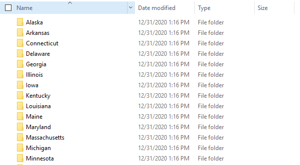
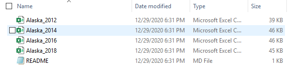

Reading Multiple CSVs into Merged R Dataframe
By Justin Schulberg
- 9 minutes read - 1710 wordsThe purpose of this script is to load and clean all of the various .csv files containing polling place data into R. The data, which is available for download here, is structured as follows:
- Each state (32 in total) has its own folder
- Within each state (folder), there are a variable number of CSV files, one for each year that polling place data is available
Here is what the folder structure looks like:

Here is one example of the datasets that could be contained in a folder:

Generally, my approach to reading in these data files into 1 R Dataframe is to:
0. Initialize an empty dataframe to hold the results
1. Loop through each state folder
2. Determine the CSVs within that state folder
As a precautionary measure, let’s determine how many state folders there are. We’ll assume that any object in our working directory that does NOT end in .csv is a state folder. Because there’s no direct regex to look for “un-matches”, let’s find the set difference between all of our files and those ending in .csv.
# Determine the different state folders in our dataset and remove any already existing csv files
all_files <- list.files(here("Data/Polling-Places-Data/"))
csv_files <- list.files(here("Data/Polling-Places-Data/"), pattern = ".csv$")
(states <- setdiff(all_files, csv_files))## [1] "Alaska" "Arkansas" "Connecticut" "Delaware"
## [5] "Georgia" "Illinois" "Iowa" "Kentucky"
## [9] "Louisiana" "Maine" "Maryland" "Massachusetts"
## [13] "Michigan" "Minnesota" "Mississippi" "Montana"
## [17] "Nebraska" "New_Hampshire" "New_Jersey" "New_Mexico"
## [21] "North_Carolina" "North_Dakota" "Ohio" "Oklahoma"
## [25] "Pennsylvania" "Rhode_Island" "South_Carolina" "South_Dakota"
## [29] "Vermont" "Virginia" "West_Virginia" "Wisconsin"0. Initialize an Empty Dataframe
Next, we’ll set up the structure for our dataframe. These are the columns and associated data types for each column that we expect to get.
polling_places <- data.frame(state_name = character(),
state = character(),
election_date = as.Date(character()),
jurisdiction_type = character(),
jurisdiction = character(),
county_name = character(),
precinct_name = character(),
precinct_id = character(),
polling_place_type = character(),
municipality = character(),
name = character(),
address = character(),
year = double(),
stringsAsFactors=FALSE)1. Read in Data
In this next section, which constitutes the major lift for reading in the data, we will:
1. Loop through each of the state folders we discovered earlier (outer loop) and determine the number of files in the folder
2. Loop through each of the .csv files (inner loop) to:
3a. Determine if it’s a .csv
3b. If it is, read it in as a temporary dataframe
3. Create two new columns in the temporary dataframe:
- state_name <- same as the folder name in the outer loop
- year <- same as the year that appears in the name of the file
4. Append (union) the temporary dataframe created in Step 3 to the empty, initialized dataframe from earlier
1.1 Loop through State Folders
First, we start with the outer loop, which goes through all of the state folders, as defined above. Once in each state folder, we’ll identify all of the files that exist within it (usually a few .csv files and one .md file).
for (state_ in states) {
# Within each data folder, there are multiple .csv files, one for each election. Let's pull out each of these files
state_contents <- list.files(paste(here("Data/Polling-Places-Data/"), state_, sep = "/"))1.2 Loop through CSV Files
Next, let’s loop through each of the states to read our .csv files in. Remember that in this step we will:
- Determine if the file is .csv (otherwise, it’s .md)
- Determine the name of the file (a combination of our file path, the state name from the outer loop, and the value from the inner loop)
- Read the file in as a temporary dataframe
for (i in state_contents) {
# If the file is a csv file, then let's read it in
if (str_detect(i, ".csv") ) {
# Find the file path name for the csv
csv_name <- paste("Data/Polling-Places-Data", state_, i, sep = "/")
# Let's read in the file as a temporary dataframe
temp_df <- read_csv(csv_name, col_types = cols(
.default = col_character(),
election_date = col_date(format = ""),
state = col_character(),
jurisdiction = col_character(),
county_name = col_character(),
municipality = col_character(),
jurisdiction_type = col_character(),
polling_place_type = col_character(),
precinct_id = col_character(),
precinct_name = col_character(),
name = col_character(),
address = col_character()
)
)1.3 Create New Features
Now that we’ve read in our dataset, we’ll create two new columns in the temporary dataframe:
1. state_name | From the outer loop
2. year | From the name of the csv (also available as the iterator, i)
# We want the state name from earlier to be brought in as the column
temp_df <- temp_df %>%
mutate(state_name = state_,
year = as.integer(str_extract(i, "\\d+"))
)1.4 Union to Master Dataframe
Lastly, we’ll append the temporary dataframe to our master dataframe using a smart union (bind_rows), which doesn’t need all column headers to match.
# Lastly, let's append this to the bottom of our master dataset
polling_places <- bind_rows(polling_places, temp_df)Altogether Now!
What does all of this look like together? Well, here it is:
for (state_ in states) {
# Within each data folder, there are multiple .csv files, one for each election. Let's pull out each of these files
state_contents <- list.files(paste(here("Data/Polling-Places-Data/"), state_, sep = "/"))
# Let's loop through each of the states to read and add our .csv files in
for (i in state_contents) {
# If the file is a csv file, then let's read it in
if (str_detect(i, ".csv") ) {
# print("Parsing...")
# Find the file path name for the csv
csv_name <- paste("Data", "Polling-Places-Data", state_, i, sep = "/")
# Let's read in the file as a temporary dataframe
temp_df <- read_csv(csv_name, col_types = cols(
.default = col_character(),
election_date = col_date(format = ""),
state = col_character(),
jurisdiction = col_character(),
county_name = col_character(),
municipality = col_character(),
jurisdiction_type = col_character(),
polling_place_type = col_character(),
precinct_id = col_character(),
precinct_name = col_character(),
name = col_character(),
address = col_character()
)
)
# We want the state name from earlier to be brought in as the column
temp_df <- temp_df %>%
mutate(state_name = state_,
year = as.integer(str_extract(i, "\\d+"))
)
# Lastly, let's append this to the bottom of our master dataset
polling_places <- bind_rows(polling_places, temp_df)
}
}
# cat("===========================\n===========================\n")
}
# WE'RE DONE.
cat(praise(), "WE'RE DONE!!!")## You are slick! WE'RE DONE!!!And that’s it! If you run the code above, make sure to uncomment the print/cat functions so you can get updates as the code runs. Let’s take a look at the final dataset:
| State_name | State | Election_date | Jurisdiction_type | Jurisdiction | County_name | Precinct_name | Precinct_id | Polling_place_type | Municipality | Name | Address | Year | Polling_location_type | Polling_place_id | County_fips | Ward | Ghost_precinct | Notes |
|---|---|---|---|---|---|---|---|---|---|---|---|---|---|---|---|---|---|---|
| Alaska | Ak | 2012-11-06 | Borough | Fairbanks North Star | Aurora | 01-446 | Agricultural Museum - Fairgrounds | 1800 College Road, Fairbanks, Ak 99101 | 2012 | |||||||||
| Alaska | Ak | 2012-11-06 | Borough | Fairbanks North Star | Fairbanks No.1 | 01-455 | Fnsb Borough Offices | 809 Pioneer Road, Fairbanks, Ak 99707 | 2012 | |||||||||
| Alaska | Ak | 2012-11-06 | Borough | Fairbanks North Star | Fairbanks No.2 | 01-465 | Golden Towers | 330 3rd Avenue, Fairbanks, Ak 99701 | 2012 | |||||||||
| Alaska | Ak | 2012-11-06 | Borough | Fairbanks North Star | Fairbanks No.3 | 01-470 | Noel Wien Library | 1215 Cowles Street, Fairbanks, Ak 99701 | 2012 | |||||||||
| Alaska | Ak | 2012-11-06 | Borough | Fairbanks North Star | Fairbanks No.4 | 01-475 | National Guard Armory | 202 Wien Street, Fairbanks, Ak 99701 | 2012 | |||||||||
| Alaska | Ak | 2012-11-06 | Borough | Fairbanks North Star | Fairbanks No.5 | 01-480 | Pioneer Park Centennial Center | 2300 Airport Way, Fairbanks, Ak 99707 | 2012 | |||||||||
| Alaska | Ak | 2012-11-06 | Borough | Fairbanks North Star | Fairbanks No.6 | 01-485 | Shopper’s Forum Mall | 1255 Airport Way, Fairbanks, Ak 99707 | 2012 | |||||||||
| Alaska | Ak | 2012-11-06 | Borough | Fairbanks North Star | Fairbanks No.7 | 01-490 | Jp Jones Community Dev Center | 2400 Rickert Street, Fairbanks, Ak 99707 | 2012 | |||||||||
| Alaska | Ak | 2012-11-06 | Borough | Fairbanks North Star | Fairbanks No.10 | 01-495 | Pioneer Park Centennial Center | 2300 Airport Way, Fairbanks, Ak 99707 | 2012 | |||||||||
| Alaska | Ak | 2012-11-06 | Borough | Fairbanks North Star | Badger No.2 | 02-345 | Badger Plaza | 771 Badger Road, Fairbanks, Ak 99711 | 2012 | |||||||||
| Alaska | Ak | 2012-11-06 | Borough | Fairbanks North Star | Fairbanks No.8 | 02-355 | Frontier Outfitters/Gavora Mall | 250 Third Street, Suite 6, Fairbanks, Ak 99701 | 2012 | |||||||||
| Alaska | Ak | 2012-11-06 | Borough | Fairbanks North Star | Fairbanks No.9 | 02-365 | Tanana Middle School | 600 Trainor Gate Road, Fairbanks, Ak 99701 | 2012 | |||||||||
| Alaska | Ak | 2012-11-06 | Borough | Fairbanks North Star | Fort Wainwright | 02-375 | Last Frontier Community Activity Center | 1044 Apple Street, Fort Wainwright, Ak 99703 | 2012 | |||||||||
| Alaska | Ak | 2012-11-06 | Borough | Fairbanks North Star | Badger No.1 | 03-130 | New Hope Methodist-Presbyterian Church | 2371 Bradway Road, North Pole, Ak 99705 | 2012 | |||||||||
| Alaska | Ak | 2012-11-06 | Borough | Fairbanks North Star | Chena Lakes | 03-135 | Santa Senior Center | 101 E 5th Avenue, North Pole, Ak 99705 | 2012 | |||||||||
| Alaska | Ak | 2012-11-06 | Borough | Fairbanks North Star | Newby | 03-165 | North Pole Plaza Mall | 301 N Santa Claus Ln., North Pole, Ak 99707 | 2012 | |||||||||
| Alaska | Ak | 2012-11-06 | Borough | Fairbanks North Star | North Pole | 03-175 | North Pole City Hall | 125 Snowman Lane, North Pole, Ak 99705 | 2012 | |||||||||
| Alaska | Ak | 2012-11-06 | Borough | Fairbanks North Star | Plack | 03-183 | North Pole Plaza Mall | 301 N Santa Claus Ln., North Pole, Ak 99707 | 2012 | |||||||||
| Alaska | Ak | 2012-11-06 | Borough | Fairbanks North Star | Ester | 04-230 | Ester Fire Station | 3570 Old Nenana Hwy, Ester, Ak 99725 | 2012 | |||||||||
| Alaska | Ak | 2012-11-06 | Borough | Fairbanks North Star | Farmers Loop | 04-240 | Seventh-Day Adventist Church - Gym | 1811 Farmer’s Loop Road, Fairbanks, Ak 99708 | 2012 | |||||||||
| Alaska | Ak | 2012-11-06 | Borough | Fairbanks North Star | Goldstream No.1 | 04-250 | Chena Goldstream Fire Station 3 | 1300 Goldstream Rd, Fairbanks, Ak 99709 | 2012 | |||||||||
| Alaska | Ak | 2012-11-06 | Borough | Fairbanks North Star | Goldstream No.2 | 04-260 | Ken Kunkel Community Center | 2591a Goldstream Road, Fairbanks, Ak 99709 | 2012 | |||||||||
| Alaska | Ak | 2012-11-06 | Borough | Fairbanks North Star | Steese East/Gilmore | 04-265 | Bentley Mall | 32 College Road, Fairbanks, Ak 99701 | 2012 | |||||||||
| Alaska | Ak | 2012-11-06 | Borough | Fairbanks North Star | Steese West | 04-270 | Bentley Mall | 32 College Road, Fairbanks, Ak 99701 | 2012 | |||||||||
| Alaska | Ak | 2012-11-06 | Borough | Fairbanks North Star | University Hills | 04-280 | Effie Kokrine Charter School | 601 Loftus Road, Fairbanks, Ak 99701 | 2012 |
Looks great!
Alternative Methods
It shouldn’t go without saying that this is not the only way to read in multiple data files from different folders! More experienced R users usually use techniques from the purrr package (i.e. map() function) to more efficiently (in terms of time and lines of code) perform the same task as above. While the purrr package does provide much facility and readability in code, I usually prefer to write out the process using for loops, as it allows me to better understand what’s happening “under the hood”.
Article also available here:
https://jschulberg.medium.com/reading-multiple-csvs-into-merged-r-dataframe-fe745d9e5b78